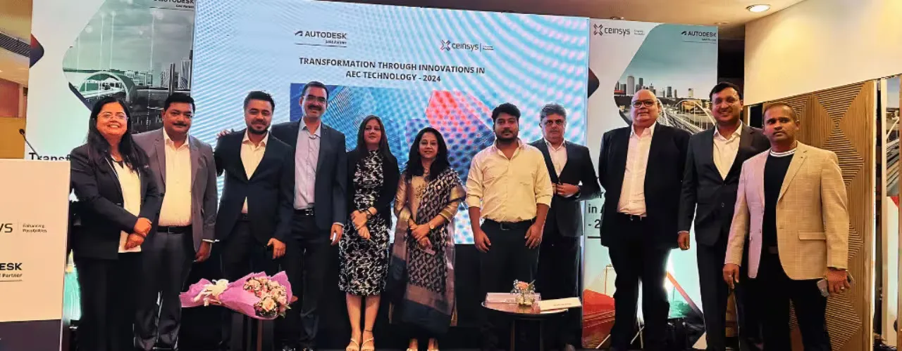

Mumbai, October 25, 2024 – CS TECH Ai, a leader in geospatial and engineering solutions, in partnership with Autodesk, proudly hosted the exclusive event “Transformations Through Innovation in AEC Technology” at the Hotel Marine Plaza, Mumbai. This event brought together prominent figures from the Architecture, Engineering, and Construction (AEC) sectors, fostering discussions on the latest advancements shaping the industry.
The event featured presentations, panel discussions, and technical sessions, with attendees from key government organizations, industry experts, and technology pioneers. The agenda was crafted to offer insights into emerging trends and innovative solutions transforming AEC.
Tarun Bisht, Vice President of CS TECH Ai, underscored the company’s commitment to technological innovation, saying, “At CS TECH Ai, our focus is on empowering clients with solutions that enhance decision-making and operational efficiency. This event exemplifies our dedication to advancing AEC practices through collaboration and innovation.”
In a panel discussion on the Future of the AEC Industry, Nikhil Bagalkotkar, Director of Tech Sales for AEC – APAC at Autodesk, highlighted Autodesk’s role in driving digital transformation: “BIM and Digital Twins are more than tools; they are reshaping the way we design, build, and manage infrastructure. Our collaboration with CS TECH Ai is a testament to our commitment to pushing the boundaries of productivity and sustainability in AEC.”
The program included an overview of CS TECH Ai’s core offerings, presented by Vatsal Dave, Senior Consultant at CS TECH Ai. Key solutions showcased were:
- Geospatial Solutions – Advanced mapping and data analysis services.
- Smart City Solutions – IoT-enabled technologies for urban infrastructure enhancement.
- Infrastructure Development – Comprehensive project support, from planning to execution, presented by Anant Jain, Senior Group Manager at CS TECH Ai, who focused on project visualization and efficient tracking.
The event also included a technical presentation on Digital Twin and Asset Management by Ms. Preethi Rao from Autodesk, a specialist in AEC processes, and a detailed case study on the Kharghar Turbhe Link Road, presented by Trupti Gandhi from CS TECH Ai, in collaboration with the CIDCO team.
The event provided an invaluable networking opportunity, enabling attendees to explore future partnerships and stay informed on innovations in AEC technology. CS TECH Ai continues to drive industry advancements by connecting stakeholders with cutting-edge solutions and insights.